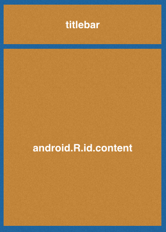

拨开炫酷的外表, 看看衣服里面的View是怎样工作的
ViewRoot和DecorView
这是在View三大流程之前(measure, layout, draw),需要了解的概念.
ViewRoot对应于ViewRootImpl, 它是连接WindowManager和DecorView的纽带. View的三大流程都是通过ViewRoot来完成的. 当一个Activity对象在ActivityThread被创建后. 会将DecorView添加到Window中, 同时会创建ViewRootImp对象, 并将ViewRootImpl对象和DecorView建立关联.
View绘制流程是从ViewRoot的PerformTraversals()开始的. 经过三大流程才能将一个View绘制出来.
PerformTraversals()会依次调用performMeasure, performLayout, performDraw. 而前两种内部的调用基本一致,都是先调用measure()/layout(),然后再调用onMeasure()/onLayout()在这个方法中会对所有子元素进行测量和绘制.依次向内部传递. performDraw()有点不同是在draw调用的dispatchDraw().
- measure过程: 决定了View宽高, measure后可以通过
getMeasureWidth和getMeasureHeight来获取View的宽高. 一般情况下是最终宽高. - layout过程: 决定了View的顶点坐标和实际View的宽高. 完成后通过
getTop, getBottom, getLeft, getRight获得四个顶点, 通过getWidth,和getHeight获得宽高 - draw过程: 只有draw()方法完成之后View的内容才会显示出来.
setContentView(R.layout.activity_inside_intercept); |
上面第一行可以说无时无刻不存在. 而下面这行在上一章说过就是获得我们设置的布局.那DecorView布局究竟是怎么样的, 下图.

DecorView就是一个FrameLayout. 而一般情况下它的布局就如上面图那样(具体和主题有关系). 而我们经常setContentView(xxx). 就是把我们编写的xml的布局添加到了DecorView的android.R.id.content的控件布局中. 所以也就能说通为什么getChildAt(0)会获得我们的的布局.
并且为什么我们用的关联布局的方法是setContent…
MeasureSpec
很大程度上决定一个View的尺寸规格, 之所以不是绝对, 是因为这个过程还受父容器的影响.
理解MeasureSpec
MeasureSpec本身是一个32位的int值, 但是却表示了两种信息.
- 高2位: 代表了SpecMode, 测量模式
- 低30位: 代表了SpecSize, 在上述测量模式中的大小
public static class MeasureSpec { |
是不是挺有意思. 三种类型分别高二位01, 00, 10来代表. 直接利用位运算. 来实现可以让频繁计算的东西使用最接近计算机的运算方式. 不需要额外的转换. 也避免了过多的对象内存分配.
说一下SpecMode的三种模式
- UNSPECIFIED: 父容器不对View有任何的限制,要多大就给多大, 这种情况一般用于系统内部,表示一中测量状态
- EXACTLY: 父容器已经检测出View所需要的精确大小, 这个时候View的最终大小就是SpecSize所指定的值. 对应着LayoutParams中的
match_parent和具体的数值. - AT_MOST: 父容器制定了一个可用的大小及SpecSize, View的大小不能超过这个值, 它对应与LayoutParams中的
wrap_content
MeasureSpec和LayoutParams关系
通常设置的LayoutParams,系统会在父容器的的约束下转换成对应的MeasureSpec,然后根据这个MeasureSpec来确定View测量后的宽高. 所以View自身的MeasureSpec是需要LayoutParams和父容器一起组合生成的.
上面讲述的是普通View, 但是顶级View(DecorView)有所不同. DecorView是物理窗口尺寸和自身的LayoutParams决定的. 具体在ViewRootImpl类measureHierarchy()进行生成的.
MeasureSpec一旦确定, onMeasure中就可以测量View的宽高.
对于我们日常操作的View
View的measure过程是由ViewGroup传递而来的. 看ViewGroup#measureChildWithMargins()方法
protected void measureChildWithMargins(View child, |
上面会对子元素进行measure, 而在此之前,会通过getChildMeasureSpec()来得到子元素的MeasureSpec. 通过调用方法传入的参数看到. 生成View的MeasureSpec和父容器的MeasureSpec, View自身方向的padding``margin, 和自身的LayoutParams这三个因素相关联.
而其中的getChildmeasureSpec()方法: 就是根据父容器的MeasureSpec同时结合View自身的LayoutParams来确定子元素的MeasureSpec.这个方法总结如下:
- dp/px: 不管父容器的
MeasureSpec是什么. View都是EXACTLY(精确模式), 而大小遵循自身LayoutParams的大小. - match_parent: 如果父容器是
EXACTLY(精确模式),那么子View也是EXACTLY(精确模式)并且大小是父容器的剩余空间. 如果父容器是AT_MOST(最大模式),那么子View也是AT_MOST(最大模式)并且大小不会超过父容器的剩余空间. - wrap_content: 不管父容器是什么. View都是
AT_MOST(最大模式), 并且大小不能超过父容器剩余空间.
上述没有说明UNSPECIFIED在match_parent和wrap_content中. 因为这个模式主要用于系统多次Measure的情形,一般来说不需要关注.
View的工作流程
主要指measure, layout, draw三大流程. 即测量,布局,绘制.
measure过程
这里面存在两种场景:
- View: 通过了
measure方法就完成了测量过程 - ViewGroup: 除了测量自己,还会遍历去调用所有子元素的
measure方法. 各个子元素在递归去执行这个流程
View的measure过程
View的measure过程由其measure()方法来完成, measure()方法是一个final类型, 而在内部调用了onMeasure()这个可不是final, 所以也可以自定义的时候复写. 看一下内部.
protected void onMeasure(int widthMeasureSpec, int heightMeasureSpec) { |
setMeasureDimension()会设置View宽高的测量值.
这里需要看一下getDefaultSize()这个方法.
public static int getDefaultSize(int size, int measureSpec) { |
看到如果这个view是EXACTLY(精准模式), 那么返回的大小就是SpecSize. UNSPECIFIED一般用于系统测量先不说. 而AT_MOST(最大模式)的时候. 虽然是不同模式但是默认情况下和精确模式是一样的结果.
getSuggestedMinimumWidth()和getSuggestedMinimumHeight(). 看一下实现.
protected int getSuggestedMinimumWidth() { |
首先会看是否设置了背景.
- 无背景: 那么宽度为
mMinWidth,这个值对应布局中的android:minWidth属性,默认为0. - 有背景: 那么取
mMinWidth和mBackground.getMinimumHeight()最大值.
而getMinimumHeight()根据看一下:
public int getMinimumHeight() { |
原来getMinimumHeight()返回的就是Drawable的原始高度. 如果没有就返回0. 关于原始高度举个例子ShapeDrawable无原始宽高, BitmapDrawble有原始宽高就是图片的尺寸.
整理getDefaultSize(): 直接继承View的自定义控件需要重写onMeasure()方法并设置wrap_content时的自身大小,否则在布局中使用wrap_content虽然View自身的MeasureSpec的低30位保存了父容器计算自身的剩余大小. 但是在自定义的时候如果不进行处理wrap_content,那么就会调用默认setMeasureDimension()方法. 而默认中方法的实参传递的是getDefaultSize()这个方法中对AT_MOST这种模式没有处理. 直接沿用和精确模式的大小(相当于设置了wrap_content却得到了match_parent的显示结果)
可以针对这个问题, 做出对应的编码进行解决:
|
ViewGroup的Measure
对于
ViewGroup不光会测量自己,还会遍历调用所有的子元素的measure(). 和View不同的是ViewGroup是一个抽象类,它没有重写onMeasure,但提供了measureChildren()的方法.
这个measureChildren()方法内部比较简单就是遍历自己的孩子然后调用->measureChild()
这个measureChild()这个方法前面贴过源码. 就是取出子元素的LayoutParams,并调用->getChildMeasureSpec(). 通过传入子元素的LayoutParams里面的宽高属性, 子元素的padding和margin, 父元素当前(当前ViewGroup)的MeasureSpec属性来计算出子元素的MeasureSpec最后调用->child.measure()传入之前计算的测量规格.
ViewGroup为什么没有定义测量的具体过程? 因为具体的测量过程需要交给子类去实现的. 比如LinearLayout,RelativeLayout.
看一下LinearLayout的onMeasure()是如何定义的.
|
根据设置的排列方式这里分之了两种测量方法. 稍微看一下大概轮廓,选择measureVertical()不贴源码了这个方法300行呢!
首先这个方法会遍历每个子元素并执行->measureChildBeforeLayout()方法.这个方法内部会调用子元素的measure(), 这样子元素会依次测量. 并且会通过mTotalLenght这个变量来存储LinearLayout在竖直方向上的初步高度, 每测量一个就会增加. 当子元素测量完之后,LinearLayout会测量自己的大小.
在对自己进行测量的时候. 如果布局中的高度采用的是match_parent或者具体数值, 那么它的测量过程和View一样,即高度为specSize. 如果布局中采用wrap_content那么高度就是所有的子元素总和但是不能超过父元素剩余空间, 还有竖直方向LinearLayout的padding. 具体可参考resolveSizeAndState()的实现.
到这里基本上measure测量过程已经做了比较详细的分析. 这个过程也是三大过程中最复杂的一个. 在measure完成之后就可以通过getMeasuredWidth/Height方法获取View的测量宽高. 但是请注意:某些极端情况下,measure可能执行多次. 所以尽量在onLayout()方法中去获得最终宽高.
正确获取宽高方法
首先明确一点:View的measure和Activity的生命周期方法不是同步执行.所以无法保证在某个生命周期(onCreate,onStart)获取到正确的测量宽高
- onWindowFocusChanged()
- view.post(runnable)
- ViewTreeObserve
- view.measure()
onWindowFocusChanged():View已经初始化完毕,宽高已经准备好. 这里需要注意只要Activity的焦点发生变化此方法就会被调用.所以如果你的界面会频繁的进行onPause和onResume.并且里面有很多关联依赖的方法. 那就请注意这不是一个好办法.- 通过
post可以将一个runnable投递到消息队列的尾部,然后等待Looper调用此runnable的时候.View已经初始化完毕. - 使用
ViewTreeObserver. 当View的可见性发生了改变的时候.onGlobalLayout()将发生回调.注意伴随着View树的状态改变等,这个回调方法可能会被调用多次. 使用代码如下
ViewTreeObserver viewTreeObserver = tv_main.getViewTreeObserver(); |
- view.measure(widthMeasureSpec, heightMeasureSpec)
也可以手动进行测量,但是需要分情况处理.
match_parent
当View是此属性的时候无法使用measure(),首先使用这种方法需要的参数,是通过父容器和子元素组合来生成的子元素的MeasureSpec属性. 所以在外部我们不知道父元素的参数值得时候只能处理不需要父元素数据就可以生成子元素的MeasureSpec的模式
所以很清楚, 这个match_patch这个模式,在给其子元素构造MeasureSpec的时候需要得值parentSize,所以得到的也是无效.
具体数值px/dx
假设这里是100px, 首先构成宽高对应的MeasureSpec属性
int widthSpec = View.MeasureSpec.makeMeasureSpec(100, View.MeasureSpec.EXACTLY); |
wrap_content
int widthSpec = View.MeasureSpec.makeMeasureSpec(((1 << 30)-1), View.MeasureSpec.AT_MOST); |
通过(1<<30)-1 可以构成一个MeasureSpec低30位的最大值. 用理论上View能支持的最大值去构造
关于网上一些在make的使用传入UNSPECIFIED,属于违背了内部实现的规范.不用最好
关于网上另一种measure()直接传入LayoutParams.WRAP_CONTENT. 其实也只有当子元素为wrap_content和子元素为match_parent并且父元素是wrap_conetnt时会碰巧有效.
layout过程
在ViewGroup中会先通过layout()方法确定本身的位置. 然后调用onLayout()方法遍历所有的子元素,并调用子元素的layout()方法确定子元素的位置…依次循环.
提出View的layout方法, 这里抽取部分代码
public void layout(int l, int t, int r, int b) { |
这样来看,大致流程通过setFrame()方法来设定View的四个顶点的位置, 即mLeft,mTop,mBottom,mRight,这四个顶点一旦确定.当前View的位置也就确定. 然后会调用onLayout()方法. 这个方法是确定子元素的View位置.
这里的和onMeasure()类似, onLayout()具体实现和具体的布局有关, 所以View和ViewGroup均没有真正实现onLayout()方法.
看一下LinearLayout的onLayout()源码
|
和onMeasure()一样分支,接下来跟进layoutVertical()贴出主要代码
void layoutVertical(int left, int top, int right, int bottom) { |
上面代码大体逻辑: 首先遍历所有孩子并调用setChildFrame()来为子元素指定对应的位置. 其中childTop会逐渐增大, 这就意味着后面的子元素会被放置在靠下的位置. 而setChildFrame()内部仅有一行代码, 就是调用子元素的layout()并传入它自身应该存放的位置.
private void setChildFrame(View child, int left, int top, int width, int height) { |
而在setChildFrame()中传入的宽高就是子元素的测量宽高.
而在子元素的layout()中通过setFrame()来设置元素的四个顶点.
getWidth()layout中的宽 和getMeasureWidth()中的宽永远一样么?
在一般情况下,测量measure和layout时候的值是完全一样的. 因为layout()中接受的参数就是通过测量的结果获取到的. 并且内部直接通过setFrame()赋值到自己的四个成员变量上. 但是如果对layout()进行了复写.如下
|
如果进行了这样的复写, 那么最终宽高永远会与测量的出来的值相差200.
draw过程
这个过程只是将View绘制到屏幕上面.
- 绘制背景
background.draw(canvas) - 绘制自己
onDraw() - 绘制children
dispatchDraw() - 绘制装饰
onDrawScrollBars()
View绘制过程传递是通过dispatchDraw()实现的. 传递了自己的画布. 这个方法会遍历子元素并且调用元素的draw()
View一个特有的方法setWillNotDraw(), 这个方法是设置了true那么系统会进行相应的优化. 在View中默认是关闭的. 而ViewGroup默认是开启的. 如果我们继承了自定义ViewGroup如果还需要绘制自己的内容那么需要显示的关闭此标记.
自定义View
自定义View的分类
1.继承View重写onDraw方法
这种方法主要用于实现一些不规则的效果, 不方便组合布局实现,或者又有动态显示的一些图形. 需要自己绘制那么就重写onDraw()方法. 这种方法需要自己支持wrap_content和padding
2.继承ViewGroup派生特殊Layout
这种方式用于实现自定义布局, 这种布局的实现稍微复杂,需要合适的处理ViewGroup的测量,布局这两个过程,并同时处理子元素的测量和布局过程.
3.继承特定的View(TextView)
比较常见, 一般用于扩展已有的View的功能. 这种不需要自己处理wrap_content和padding
4.继承特定ViewGroup(LinearLayout)
当某种效果看起来像几种View的组合在一起的时候,可以采用这种方式. 这种方式不需要自己处理ViewGroup的测量和布局. 其实这种方式和2没什么区别, 主要是2更接近于底层的View实现.
自定义View的须知
- 让View支持
wrap_content - 最好让你的View支持
padding-> 如果直接继承View,在draw()中不处理padding,那么属性是无法起作用的. 还有继承ViewGroup的控件需要在onMeasure和onLayout中考虑padding和子元素的margin会造成的影响. - 尽量不要在View中使用
Handler-> 内部已经提供了post系列方法. 除非很明确要是用Handler发送消息. - View中如果有线程或者动画,需要及时的停止.-> 当包含此View的Activity退出或者此View被remove的时候,View的
onDetachedFromWindow()会被调用,可以适当处理防止内存泄漏. - View带有的滑动嵌套时,需要处理好滑动冲突.
自定义View实例
1.自定义View派生类
首先写一个类继承View, 并在ondraw()画一个圆. 并设置margin属性. 效果没有问题,因为margin属性是由父容器控制的.

**问题1:**这里把android:layout_width="wrap_content"设置根据内容. 发现无效.
不管是设置match_parent也好,wrap_content也好父容器都会给分配自己剩余空间的大小给子容器作为specSize的空间大小这时需要手动处理. 因为不处理那就是相当于和match_parent填充父容器的效果一样.
所以增添对onMeasure()方法中的AT_MOST模式的制定默认大小, 然后在运行, ok,如下

**问题2:**这时加上属性padding=20dp发现无效. 无变化. 之前说过margin是交给父容器分配的.padding确实要自己要分配处理的. 这时需要在onDraw()来处理. 处理后如下

**问题3:**有时候我们需要提供自定义属性. 例如android:id=这种. 接下来添加自定义属性.
- 在
values目录下创建自定义属性的xml. 名字随便当最好attrs.xml或者attrs_xxx_xxx.xml.
|
上面相当于,定义了一个CircleView的属性集合. 在这个集合里面会有自定义属性. 这里的format格式可以是指定尺寸的dimension, 资源id引用的reference, 基本类型string, integer ,boolean等.
- 声明好了属性在我们自定义View中就可以引用处理了. 如构造方法中.
public CircleView(Context context, AttributeSet attrs) { |
- 在布局中使用即可.
先声明schemas. xmlns:app="http://schemas.android.com/apk/res-auto" ,使用app来替代之前的类似android前缀的引导.
继承View的派生类就到此为止了.
继承ViewGroup就不说了, 可以看第三章中的仓库代码的那个自定义View大致实现ViewPager的滑动
下一节: 理解RemoteViews